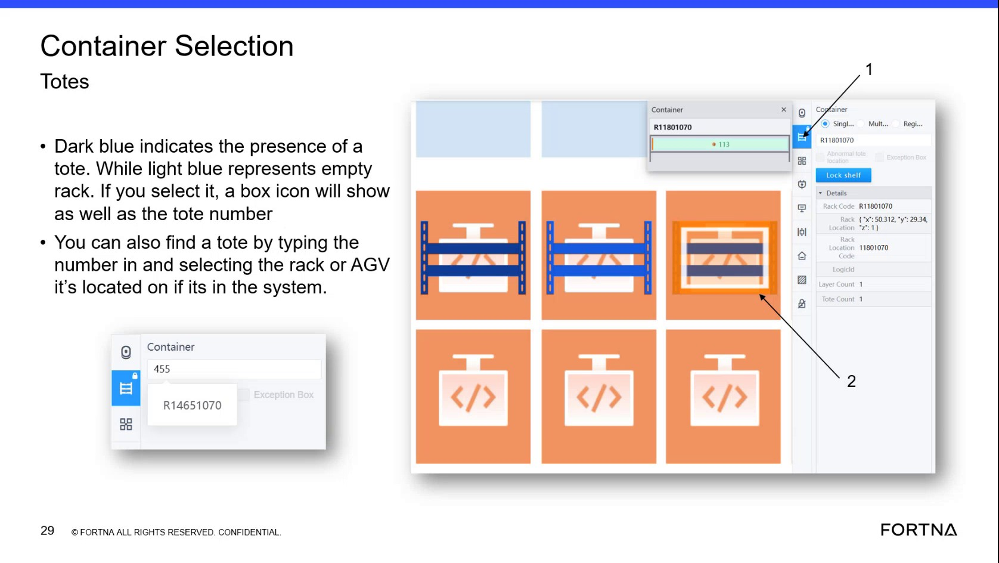

| Procedure ID | proc_interpret_tote_presence_and_empty_rack_colors_on_the_container_selection_screen_v1 |
|---|---|
| Title | Interpret Tote Presence And Empty Rack Colors On The Container Selection Screen |
| Procedure Type | reference |
| Primary Role | operator |
| Support Safe | Yes |
| Validation Status | needs_sme_review |
| Merge Status | source_finalized |
Use the documented color coding on the Container Selection screen to determine whether a rack location contains a tote or is empty. The source states that dark blue indicates the presence of a tote, light blue represents an empty rack, and selecting an item shows a box icon and the tote number.
Use this reference when viewing the Container Selection screen and you need to determine whether a displayed rack or tote location contains a tote or is empty based on the documented color meanings.
Responsible role: operator
Instruction:
Open or view the Container Selection screen and locate the rack or tote display area.
Expected result:
The Container Selection screen is visible and the relevant rack or tote location can be seen.
Screens / Images:

Stop or Escalate If:
Responsible role: operator
Instruction:
Observe the displayed color for the rack or tote location you want to check.
Expected result:
A visible color state is identified for the selected rack or tote location.
Screens / Images:
Stop or Escalate If:
Responsible role: operator
Instruction:
Interpret dark blue as indicating the presence of a tote.
Expected result:
A dark blue location is understood to contain a tote.
Screens / Images:
Stop or Escalate If:
Responsible role: operator
Instruction:
Interpret light blue as representing an empty rack.
Expected result:
A light blue location is understood to be empty.
Screens / Images:
Stop or Escalate If:
Responsible role: operator
Instruction:
If needed, select the displayed item and verify whether a box icon and tote number appear as described in the source.
Expected result:
When selected, the item shows a box icon and the tote number as described by the source.
Screens / Images:
Stop or Escalate If: